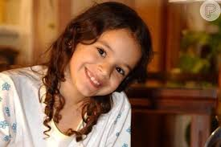
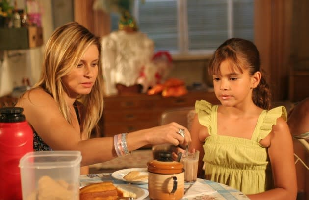
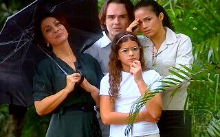
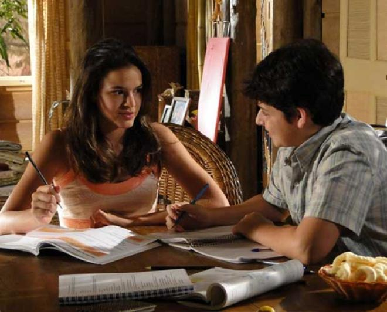
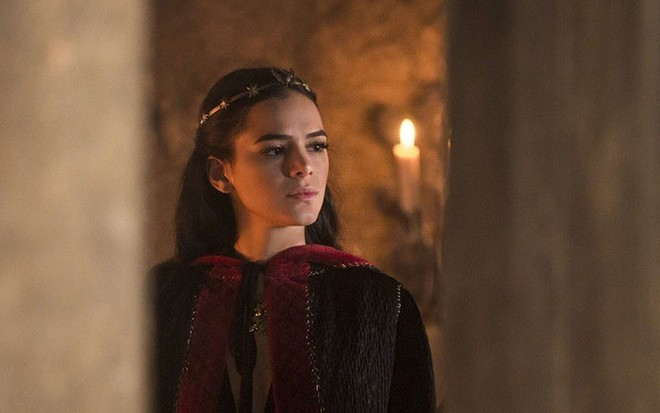

Interpretações
Salete
Em Mulheres apaixonadas, 2003, Bruna Marquezini interpreta Salete, uma menina, filha de Fernanda (Vanessa Gerbelli), e com pai desconhecido durante quase toda a trama. Somente quando Fernanda morre em um tiroteio, Salete descobre seu verdadeiro pai, Téo (Tony Ramos).
Maria Flor
Em 2005, Bruna integrou o elenco da telenovela América interpretando a personagem deficiente visual Maria Flor.
Lurdinha
Em Cobras & Lagartos, de 2006, a atriz interpretou a personagem Lurdinha. Ela era uma garota que provocava e tirava sarro de Geleia, um adolescente problemático que dava em cima dela e espalhava para os amigos que os dois namoravam. O menino teve aulas de conquista com o pai e conseguiu pedir a pretendente em namoro.
Maria Augusta

Em desejo Proibido, em 2007, Bruna interpretou Maria Augusta, a caçula de um trio de irmãs composto pela meiga Guilhermina e a ousada Tereza, vividas por Camila Rodrigues e Fernanda Paes Leme, respectivamente.
Terezinha
Em 2010, na telenovela Araguaia. Bruna interpretou Terezinha, uma menina que mora no orfanato da cidade. A mais velha das crianças, ela é tida como referência materna dos irmãos postiços, que também foram abandonados pelos pais.
Catarina
Em Deus salve o rei, Bruna Marquezini, interpretou Catarina. Uma princesa ambiciosa que passou a governar o reino de Artena, no lugar de Rei Augusto, um governante justo e benevolente.